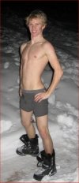
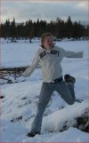
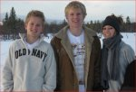

|
|

|
|
| No. 20 WINTER 2007/08 | $ A PARTRIDGE IN A PEAR TREE |
|
|
|
|
After attending a traditional Christmas Pantomime at the Old Vic Theatre in London, the Lanyon family were walking towards the south bank of the river Thames to catch their train when they decided to take a shortcut through a dark alley. Big mistake. "Suddenly," begins a disgusted Daisha, "we rolled over the biggest, nastiest, stinkiest pile of poo in the whole wide world. I mean, it was bad! It couldn't have been a dog because the sheer volume would've put a pack of Great Danes to shame! The only thing I could think was that it was some kind of secret dumping site for a big group of people who had just been to a really dodgy Indian restaurant and contracted 'Delhi belly' - it was that much! Anyway, before we knew what was happening, Tabitha's stroller had rolled straight through it! It was everywhere; all over the wheels, on the frame, all up in the mechanism and now flipping up onto the fabric! Ugh, it was foul! And there was nothing we could do so we abandoned the stroller next to the nearest garbage can - which happened to be in front of the National Theatre. As we walked briskly away from the stink bomb we were giggling... until we were struck by a sobering thought; in London you are not allowed to leave bags, boxes or equipment lying around unattended because of the terrorist threat (old throwback to the IRA days). What if theatre security saw/smelled the stroller and thought it was a chemical bomb threat?! It was definitely funky enough to arouse suspicion! We hung our heads in shame as we imagined throngs of frightened people being evacuated from the auditorium. But we had a train to catch, so we legged it! I'm sure the Lanyon gang's CCTVed faces are on some kind of criminal computer database now! Oh well. The next day we went stroller shopping and were able to upgrade Tabby's ride - so we were please with how it all came out in the end (if you'll excuse the bad pun!)."
|
 Got a problem or a question? The Cluff Family Times' lifestyle guru can solve all of your personal, romantic, financial, spiritual, decorating and fashion dilemmas. The answers are only a click away. Do you have a question for our agony aunt? Send it to: submissions@tuffcluff.com Got a problem or a question? The Cluff Family Times' lifestyle guru can solve all of your personal, romantic, financial, spiritual, decorating and fashion dilemmas. The answers are only a click away. Do you have a question for our agony aunt? Send it to: submissions@tuffcluff.com
 We'd like to plan a fun family reunion on the high seas with a big Tuffcluff family cruise in 2009 (for Dad's 70th birthday) or 2010 (more time to plan/save). The destination shortlist includes Alaska and Mexico but we're still open to all suggestions. What we need to know now is how feasible this is for everyone and which cruise/date you would prefer. Please let us know what you think ASAP. And just in case you are still unaware, the annual family reunion for the Dennis and Diana Cluff family takes place each year in Ashland on and around the Fourth of July. So get yourself to the party!
We'd like to plan a fun family reunion on the high seas with a big Tuffcluff family cruise in 2009 (for Dad's 70th birthday) or 2010 (more time to plan/save). The destination shortlist includes Alaska and Mexico but we're still open to all suggestions. What we need to know now is how feasible this is for everyone and which cruise/date you would prefer. Please let us know what you think ASAP. And just in case you are still unaware, the annual family reunion for the Dennis and Diana Cluff family takes place each year in Ashland on and around the Fourth of July. So get yourself to the party!
|
 The Johnsons: "Nial was staying with us to dig under the house," reports Tiana. "And we also had Dallas at our house for Christmas. Mom sent some dollar store stocking stuffers up with him, but we felt bad he didn�t have any presents to unwrap with us so we got him some AXE products to make him popular with the ladies, or so the commercials say they will. We all sat around in our new jammies (including Dallas) and opened presents and gorged ourselves on candy. We didn�t really decorate too much because we�re remodeling and I didn�t want one more giant mess to clean up on top of all the other messes I have. It was a leisurely Christmas, but not an eventful one, except that I got a robotic vacuum that does all the work for me! It�s the best invention! It rocks my world."
The Johnsons: "Nial was staying with us to dig under the house," reports Tiana. "And we also had Dallas at our house for Christmas. Mom sent some dollar store stocking stuffers up with him, but we felt bad he didn�t have any presents to unwrap with us so we got him some AXE products to make him popular with the ladies, or so the commercials say they will. We all sat around in our new jammies (including Dallas) and opened presents and gorged ourselves on candy. We didn�t really decorate too much because we�re remodeling and I didn�t want one more giant mess to clean up on top of all the other messes I have. It was a leisurely Christmas, but not an eventful one, except that I got a robotic vacuum that does all the work for me! It�s the best invention! It rocks my world." The Cluffers: CHRISTMAS!! What a trip! Snow everywhere!" exclaims Karen. "We got snowed out of town but luckily only missed a day of church and no school. As you can see, when you have so much snow you start to go a bit crazy, jumping, leaping, stripping, digging... whatever! We had a great time! It is beginning to thaw just now that it is March." Shira: "Christmas was great for Sophia and I," begins Shira, "although Sophia got way too many presents and some got tucked away so they could roll-over for her birthday in May!" Cage: "I got an iPod for Christmas!" begins an enthusiastic Cage, "and have been adding music to it steadily since. I'm really into Music - all kinds! But Alternative, Dance, and Rock are my favorites. I'm still playing bass, and working on the band thing, although that isn't really moving right now... I'm waiting for highschool so I can find some people who are really into music like me and who are really into making a band. I just need to find the right people... Weston: It was reported that Weston�s big gift for Christmas this year was a Dollar Store bow 'n' arrow set (little kids size)! Perhaps Santa ran out of coal! The Lanyons: The Lanyons stayed in the UK for Christmas this year (the first time since Tabitha was born) and planned to have traditional English Christmas complete with a cozy family gathering, carols at midnight mass and a big festive lunch. However, things didn't quite go to plan when Edward came down with a high fever on Christmas Eve (giving us all horrifying flashbacks of Vomfest '06!). Next year we're hoping for chickenpox - because at least some of us are immune!
 Every Cluff has a great traveling disaster story to tell because we've all been on at least one motorhome "adventure". So reliable are these motorhome trip mishaps that for years now nearly everyone has refused to go anywhere in them. Both motorhomes are now permanently parked in the Cluff compound and used for Diana�s overflow closet storage. But Cluff traveling disasters aren�t limited to the motorhome alone, oh no, they apply to airplanes, boats, bicycles and every single vehicle that dares to merge onto the asphalt, take to the skies, launch into the water or otherwise. In their travels, the Cluffs have encountered everything from a dead battery to a dead animal in the engine. And even more worrying, a genetic legacy seems to be emerging. Once disaster were strictly limited to vehicles owned by Dennis and Diana, but now just being related makes you susceptible, even by marriage! If you travel with someone of Cluff extraction, you risk the horror of the �Cluff Curse�! Bwah ha ha ha! Bwah ha ha ha! The following stories illustrate our point:
Every Cluff has a great traveling disaster story to tell because we've all been on at least one motorhome "adventure". So reliable are these motorhome trip mishaps that for years now nearly everyone has refused to go anywhere in them. Both motorhomes are now permanently parked in the Cluff compound and used for Diana�s overflow closet storage. But Cluff traveling disasters aren�t limited to the motorhome alone, oh no, they apply to airplanes, boats, bicycles and every single vehicle that dares to merge onto the asphalt, take to the skies, launch into the water or otherwise. In their travels, the Cluffs have encountered everything from a dead battery to a dead animal in the engine. And even more worrying, a genetic legacy seems to be emerging. Once disaster were strictly limited to vehicles owned by Dennis and Diana, but now just being related makes you susceptible, even by marriage! If you travel with someone of Cluff extraction, you risk the horror of the �Cluff Curse�! Bwah ha ha ha! Bwah ha ha ha! The following stories illustrate our point:There's Nor-way We'll Go Back Again The Great Vomfest of 2006! Too Many to Choose Just One! B. "Could it be the short trips where every time we drive over to I-5 or back on the coastal roads Talea gets carsick and pukes?" C. "Would it be the awesome trip to the Jellybean factory we took with the Lanyons where Hyatt ended up so sick we had to take him to the hospital on our way back home?" D. "I think the worst traveling story is when Hyrum and I were on the semi and only Hyrum knew how to drive at the time. We were driving flatbed through Colorado hauling barrels of something. Hyrum stopped on a pullout beside the freeway because the load had shifted, and he was on the trailer wrenching around on the stuff trying to get it to move back. I was in the cab looking in the mirror at what appeared to be my first gray hair. I couldn�t wait for Hyrum to get back in the truck so I could show it to him, but when the door opened, something was very wrong. Hyrum had flown off the flatbed when the bar he was wrenching on slipped and he landed on his back in the road. He had the wind knocked out of him, but had to roll over under the trailer so he wouldn�t get hit by anyone. He tried to call to me, but I couldn�t hear him, so he had to hobble over to the truck in excruciating pain. He then had to pull himself up into the driver seat and drive himself to the hospital because I had no clue how to drive and shift the truck at that time. He got x-rayed at the hospital and it turned out there were no broken bones, and his diagnosis for such horrific pain was a �buttock contusion�, which is a bruised bottom (it took about a week for the bruise to show up, but it was nasty, and it was just above his �buttocks�). We were headed to Tasha�s in Seattle with our load, but we stopped in Mountain Home, Idaho to get some Vicodin for the pain and we ended up not getting to see Tash for long because it took us so long to drive the distance in so much pain. That has to be my worst memory for traveling." The Candyman's Revenge Meeting The Cluffs My Least Favorite Trip  Thanks to all who participated. It was a close call and we loved all the entries, but the winner has to be... disaster #6! Congratulations Dallas, you win the DVD of your choice! It's hard to beat a good ol' motorhome story, especially when the preparation for the trip is much longer than the actual trip itself!!
Thanks to all who participated. It was a close call and we loved all the entries, but the winner has to be... disaster #6! Congratulations Dallas, you win the DVD of your choice! It's hard to beat a good ol' motorhome story, especially when the preparation for the trip is much longer than the actual trip itself!!
 DECEMBER: Swiss Family Robinson (1960) At first glance this may not seem like a Christmas movie, but take a closer look and you'll find a festive little Christmas section tucked in there somewhere between the cross-dressing and the coconut bombs! See, this little gem is much more exciting than you remember. And it's implanted some of us with a life-long desire to be stranded on an deserted isle! JANUARY: The Great Race (1965) This is an all time Cluff favorite with dozens of great one liners that are still in circulation among the first batch to this day! The iceburg scene gives it a nice themey feel for January, but there's more - so much more. If you haven't introduced your kids to this one, you're doing them a disservice. It's whole lot of fun for the entire family - and anyone who thinks different shouldn'ta, hadn'ta, oughtn'ta! FEBRUARY:  The Vicar of Dibley (1994-2007) Ok, ok, it's not a movie but it's a seriously funny British sitcom with a bit of romance thrown in. This little series will make you thankful for those long winter nights - so you can spend them watching the next episode! There are only 18 episodes and five specials in all. It may be difficult to get hold of in the US, but it IS available on Netflix. Give it a chance (at least a few episodes to get into the swing of things) and you won't be disappointed!
The Vicar of Dibley (1994-2007) Ok, ok, it's not a movie but it's a seriously funny British sitcom with a bit of romance thrown in. This little series will make you thankful for those long winter nights - so you can spend them watching the next episode! There are only 18 episodes and five specials in all. It may be difficult to get hold of in the US, but it IS available on Netflix. Give it a chance (at least a few episodes to get into the swing of things) and you won't be disappointed!
WILDCARD: Kind Hearts and Coronets (1949) A Fab British black comedy! You'll die laughing at the talented Alec Guinness playing half of the movie's characters. And if that isn't enough, Time magazine rates it on their top 100 list! |
Tabitha: "After months of trying, unsuccessfully, to potty train Tabitha," says an exhausted Daisha, "I was shocked to hear her teachers tell me that she was so good at using the toilet now that she didn't need help anymore. This was shocking, really, really shocking, because at home, no matter what I'd tried, she hadn't even ATTEMPTED to potty train yet. I mean nothing! And they were saying that she�d been fully potty trained for months now! Whatever!! Hyatt: "Hyatt has decided he�s ready to start potty training!" says Tiana. "We got tired of his nasty poopy diapers, so today we kept him out of a diaper (just underwear, no pants), and he did so well! All day he used the toilet, and he only peed in 2 pairs of underwear. And each of those 2 times he stopped once he started and he finished on the toilet, then he went and got a rag and cleaned the mess up himself. I�m really proud of him because I�ve never seen a kid do so well on their first day. I didn�t even keep track of taking him to the toilet all the time because he taught himself how to pull his underwear off, put the potty seat on the toilet, and climb up. Several times he went in by himself and came out saying �I did it!�, so I�d check and sure enough he had gone in the toilet without me even telling him to. Then tonight after he was diapered and in his jammies, I found him stripped down to a diaper and I asked him why he was naked and trying to take his diaper off and he said �toilet�, so I put him on the toilet and he peed! I�m pretty amazed. He might have taken forever to talk, but he walked early and he�s potty training pretty easily on his first day." The Johnsons: "We had one day of snow this year!" says Tiana. "We always have to go over toward Ashland to find snow, but we finally got one day of snow and actually made a snowman! It�s always exciting for us when it snows here since it�s so infrequent. Usually the kids have to resort to trying to make snowballs out of hail." The Cluffs: "We've been having icy weather," shivers Diana. "It's been so cold that the pipes in the barn burst and the bathroom flooded. During the height of the cold snap we had our Christmas program at the church. Dallas was Joseph in the stable scene and wore shorts, short sleeves and flipflops under his bible costume so he wouldn't be too hot, but when we arrived we found out that the whole program was to be outside on the church lawn! Mary and the babe almost died! The choir of frozen teenagers, some without coats and dressed in t-shirts, had to sing for over a half hour in the 20 degree weather! It was supposed to be a sweet scene of the birth of the Savior, but most people were so cold that they gave a quick look at the scene and rushed into the church to warm up. My complaint of child abuse was laughed at. America doesn't respect their old people. When you are 50, you are a has-been." The Cluffers: "Snow, snow, snow, ice, snow, ice and more snow," is how Karen describes their winter. "Oh yeah, we moved too! A very hectic and fun winter though. We moved from our home in Coquille that I loved right before Christmas and spent Christmas up on the Troutman property up the Green Springs. We live in a tiny little shack and love being in the back-woods. It's a lot of fun up there with the wildlife. We see wild horses, deer, skunks, rabbits, and lots more on a regular basis. Some wildlife even finds its way into our little shack, but Arrow takes care of those. Dane's working hard learning the jewelry business. It's tough when your eyesight is not as great as it once was, but he is doing really good and picking it up."  Dallas and Weston are now waiting to have their Eagle courts of honor. If your scouter hasn't been mentioned in this article, it's because you're not sending in any info. Scouting Pics
Dallas and Weston are now waiting to have their Eagle courts of honor. If your scouter hasn't been mentioned in this article, it's because you're not sending in any info. Scouting Pics
 Here, wedged between 'Lifestyles' and 'Bizarre-o World', Diana imparts some of her experience and wisdom to help with everyday problems. Here, wedged between 'Lifestyles' and 'Bizarre-o World', Diana imparts some of her experience and wisdom to help with everyday problems.2. If you have a sweet-tooth but want to prevent cavities - brush as soon as you eat a sweet. I learned this from the dentist's office. It's a pain to brush as soon as you eat a sweet but not as much pain as the hundred dollar charge for a cavity, or over a thousand for a root canal. Always carry a toothbrush with you like you do a comb. 3. When you brush your teeth, you don't feel like eating anymore. THIS IS A FANTASTIC WEIGHT LOSS TIP!
 "We've been having a cold snap," says Diana. "I had to come inside the house at 2am the other night as it was just too cold. 17 degrees is my favorite weather for sleeping outdoors, but it seemed colder than that. I heard something huge fall on my porch and shined my flashlight around to see what it was but couldn't find anything until morning when I saw that a big cottonwood tree limb had snapped off and fell inches from where I sleep. It was a narrow escape!"
"We've been having a cold snap," says Diana. "I had to come inside the house at 2am the other night as it was just too cold. 17 degrees is my favorite weather for sleeping outdoors, but it seemed colder than that. I heard something huge fall on my porch and shined my flashlight around to see what it was but couldn't find anything until morning when I saw that a big cottonwood tree limb had snapped off and fell inches from where I sleep. It was a narrow escape!"
|

|
|
Your CLUFFDAQ share price goes up one point for each Tuffcluff News article your team appears in. Given that the bulk of this newspaper is based on family emails and Skype calls, the best way to improve your stock is to write/share interesting information. You can either write an article yourself or hope that someone thinks you're cool enough to write a story about you. So get going, good luck and may the best team win. |
| Parental Team (Dennis & Diana) |
 8 points 8 points
|
$113.00 |
| The Cluffers (Dane & Karen's Family) |
3 points
|
$50.00 |
| Team Beal (Melanie & Scott's Family) |
2 points
|
$42.00 |
| Nat's Gang (Natasha & Steve's Family) |
5 points
|
$29.00 |
| Team Pip Pip & Tally Ho! (Daisha & Edward's Family) |
10 points
|
$42.00 |
| The Redecorators (Tiana & Hyrum's Family) |
8 points
|
$46.00 |
| Princess of Power (Shira & Co.) |
3 point
|
$17.00 |
| The Lone Rebel (Nial) |
1 points
|
$28.00 |
| Twin Terrors (Dallas & Weston) |
3 points
|
$73.00 |
 THIS QUARTER? THIS QUARTER?No one again - but Nial was only saved by a mention from Tiana and Hyrum! Tell us what's going on with yourself to do better next time Nial!! CLICK HERE for the next issue of the Cluff Family Times |